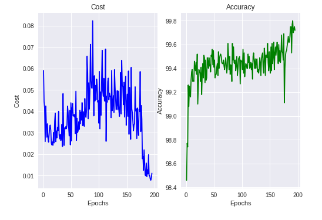
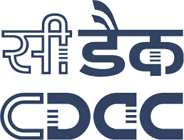
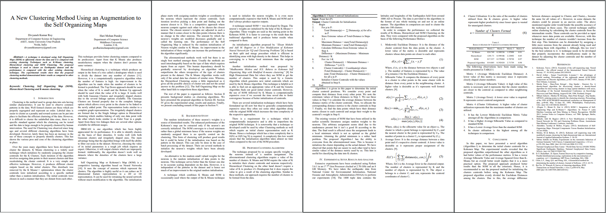

About Me
About Me
I am a Computer Science Graduate Student at Georgia Tech.
I have a deep inclination to solving problems in Machine Learning, Computer Vision. You can find some of my work on Github.
Projects
Adaptive Activation Function
Projects
Adaptive Activation Function
The goal is to create an activation function whose performance on Computer Vision benchmarks is at par with models employing higher number of parameters.
Code to paper that lead to inspiration:

Performance of our Activation Function:
Test Accuracy: 99.61% Test Loss: 0.028

Loss and Accuracy on MNIST Validation Data
Development of a Self Driving Car
Final Year Major Project
The main objective is to develop a fairly accurate distance estimation method that works on both common and ad-hoc objects. The additional challenge is to predict these distances using low-quality stereo images.
Dataset:

Proxy Re-Encryption Using Hybrid (RSA+AES), ECC Techniques
The objective was to implement a Proxy Re-Encryption scheme using the two encryption techniques.
Implementations:


A New Clustering Method Using an Augmentation to the Self Organizing Maps
The objective was to bridge the performance gap between a promising but seldom used Clustering technique and other widely used Clustering techniques.
Implementation:

Performance:

Experience
Experience
Software Development Intern, AT&T, Noida |
||
| May 2018-June 2018 | ||
|
Built an Auto-Correction, Auto-Prediction System. |
||
Software Development Intern, Centre for Development of Advanced Computing (CDAC), Noida |
 | |
| July 2018-August 2018 | ||
|
Developed a Course Management System, Project Management System currently being used by the students and employees at CDAC. |
||
Student Developer, IIT Delhi |

|
|
| June 2017-July 2017 | ||
|
Implemented a solution to the Bin Packing Problem under Prof. Amit Kumar, Department of CSE, IIT Delhi. |
||
Student Developer, MRS Associates, New Jersey |
||
| July 2017-August 2017 | ||
|
Developed a Voice User Interface and worked with the Business Team comprising of students from Drexel University. |
||
Publications
A New Clustering Method Using an Augmentation to the Self Organizing Maps
Divyansh Kumar Roy, Hari Mohan Pandey
Publications
A New Clustering Method Using an Augmentation to the Self Organizing Maps
Divyansh Kumar Roy, Hari Mohan Pandey
2018 8th International Conference on Cloud Computing, Data Science & Engineering (Confluence)
10.1109/CONFLUENCE.2018.8442431

Education
Education
Master of Science, Computer Science |

|
|
| Georgia Institute of Technology (August 2019-Present) | ||
Bachelor of Technology, Computer Science and Engineering |
||
| Amity University, Noida (July 2015-May 2019) | ||
| CGPA: 8.46/10.0 |
Achievements
- Ranked 66 among 5019 participants in Codechef* December Challenge 2017
- Ranked 159 among 9130 participants in Codechef* June Challenge 2017
- Ranked 43 among 4287 participants in Hackerearth* June Circuits 2017
- Ranked 52 among 4355 participants in Hackerearth* March Circuits 2017
- Ranked 45 among 3152 participants in Hackerearth* November Circuits 2016
- Ranked 36 among 1224 participants in Hackerearth* November Clash 2016
- Ranked 21 among 307 participants and FIRST2FINISH winner in Topcoder* SRM 724 (2017)
- Ranked 205 among 4013 participants in Codeforces* Round 407 (Div. 2)
- Ranked 188 among 1722 participants in Google Kickstart* Round F 2017
- Ranked 1st among ~1200 participants in Amity Placement Aptitude Test
- Organized and Taught in Programming workshops for fellow students. Total Attendance: 180 students
*Codechef, Hackerearth are Indian competitive programming websites hosting contests consisting of algorithmic problems.
*Topcoder, Codeforces are American and Russian competitive programming websites respectively hosting contests consisting of algorithmic problems.
*Google Kickstart is a competition held by Google comprising of algorithmic problems.
Codechef: divyansh.roy
Hackerearth: singh.divyansh19
Topcoder: singh.divyansh
Codeforces: Divyansh_19
Google Kickstart: divyansh.roy
Achievements
- Ranked 66 among 5019 participants in Codechef* December Challenge 2017
- Ranked 159 among 9130 participants in Codechef* June Challenge 2017
- Ranked 43 among 4287 participants in Hackerearth* June Circuits 2017
- Ranked 52 among 4355 participants in Hackerearth* March Circuits 2017
- Ranked 45 among 3152 participants in Hackerearth* November Circuits 2016
- Ranked 36 among 1224 participants in Hackerearth* November Clash 2016
- Ranked 21 among 307 participants and FIRST2FINISH winner in Topcoder* SRM 724 (2017)
- Ranked 205 among 4013 participants in Codeforces* Round 407 (Div. 2)
- Ranked 188 among 1722 participants in Google Kickstart* Round F 2017
- Ranked 1st among ~1200 participants in Amity Placement Aptitude Test
- Organized and Taught in Programming workshops for fellow students. Total Attendance: 180 students
*Topcoder, Codeforces are American and Russian competitive programming websites respectively hosting contests consisting of algorithmic problems.
*Google Kickstart is a competition held by Google comprising of algorithmic problems.
Codechef: divyansh.roy
Hackerearth: singh.divyansh19
Topcoder: singh.divyansh
Codeforces: Divyansh_19
Google Kickstart: divyansh.roy